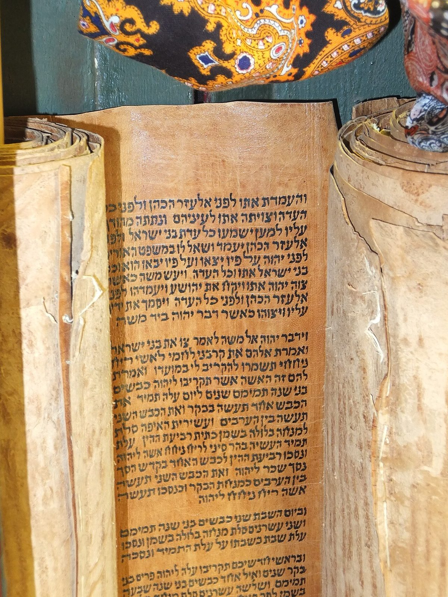

שיטת קמפבל · נוסח חב"ד
תבניות הטעמים לימים נוראים
כל תבניות הטעמים המיוחדות לימים נוראים בנוסח חב"ד, להאזנה, לתרגול ולחזרה. לוחצים על ▶ ליד כל תבנית כדי לשמוע.
- 42 תבניות
- נוסח חב"ד
42 תבניות
- 1מונח זרקא מונח סגול
- 2מונח זרקא סגול
- 3זרקא מונח סגול
- 4זרקא סגול
- 5מונח מונח רביעי
- 6מונח רביעי
- 7רביעי
- 8קדמא מהפך פשטא מונח זקף-קטן
- 9מהפך פשטא מונח זקף-קטן
- 10פשטא מונח זקף-קטן
- 11מהפך פשטא זקף-קטן
- 12מרכא פשטא זקף-קטן
- 13פשטא זקף-קטן
- 14מונח זקף-קטן
- 15זקף-קטן
- 16זקף-גדול
- 17מרכא טיפחא מונח אתנחתא
- 18טיפחא מונח אתנחתא
- 19מרכא טיפחא אתנחתא
- 20טיפחא אתנחתא
- 21אתנחתא
- 22פזר
- 23מונח פזר
- 24תלישא-קטנה
- 25מונח תלישא-קטנה
- 26תלישא-גדולה
- 27מונח תלישא-גדולה
- 28קדמא ואזלא
- 29אזלא-גרש
- 30גרשיים
- 31מונח גרשיים
- 32דרגא תביר
- 33מרכא תביר
- 34תביר
- 35יתיב
- 36מרכא טיפחא מרכא סוף-פסוק
- 37מרכא טיפחא סוף-פסוק
- 38טיפחא מרכא סוף-פסוק
- 39טיפחא סוף-פסוק
- 40סוף-פסוק
- 41מרכא טיפחא סוף-פסוק סיום עלייה
- 42טיפחא מרכא סוף-פסוק סיום עלייה
רוצה להבין את הטעמים, ולא רק לשנן?
בשיטת קמפבל לומדים לזהות כל טעם, להבדיל בין טעמים דומים, ולהבין את ההיגיון שמאחוריהם.